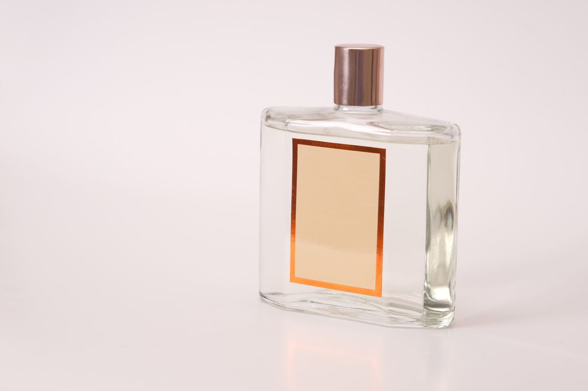
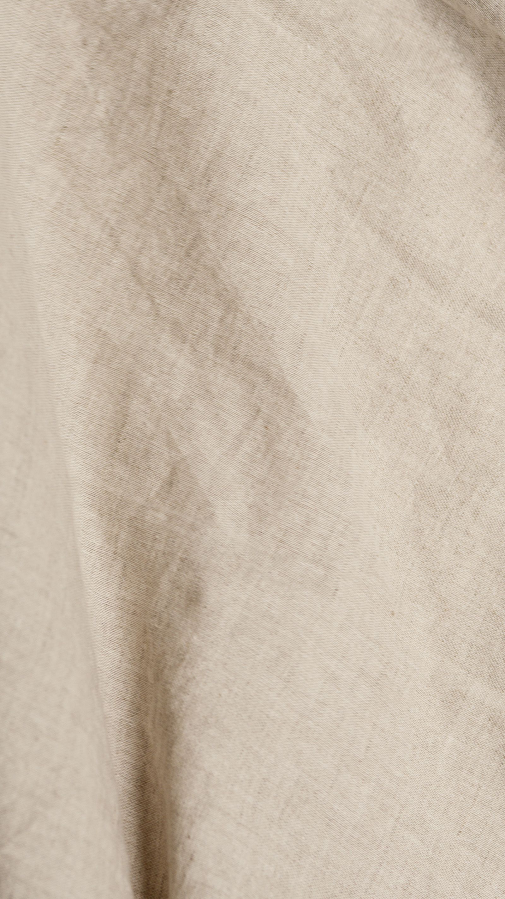

Try first
TokyoSkin Musk
Nacre
Powdered violet, cool iris and sandalwood worn close to skin.

Object / Powdery Floral
AtmosphereFragrance is not a category to scroll. It is a place, a material, a memory — worn slowly enough to become your own.Fictional multi-house prototype
A restrained edit across skin musk, amber warmth, green brightness and softened woods. Product imagery leads; metadata stays secondary.
The opening is only a first impression. Violet treats fragrance discovery as a ritual: wear, wait, return, then choose the bottle that still belongs with you.
Explore the trial ritual →Browse the library when you know the language. Build a trio when you want less risk. Begin with Scent Portrait when the feeling comes first.
Move through family, mood, house and presence without losing sight of the object.
Open the library → 02 / TRY FIRSTDiscoveryBuild a representative trio and live with each direction before committing to a bottle.
Build a trio → 03 / GUIDEDScent PortraitBegin with mood, presence and material when fragrance vocabulary is not yet useful.
Create a portrait →Each fictional maison in the Violet prototype carries a distinct olfactive point of view, so discovery can begin with a house as naturally as a note.
Shortlist three directions, wear each one slowly, then return to the full bottle only when the drydown still feels right.